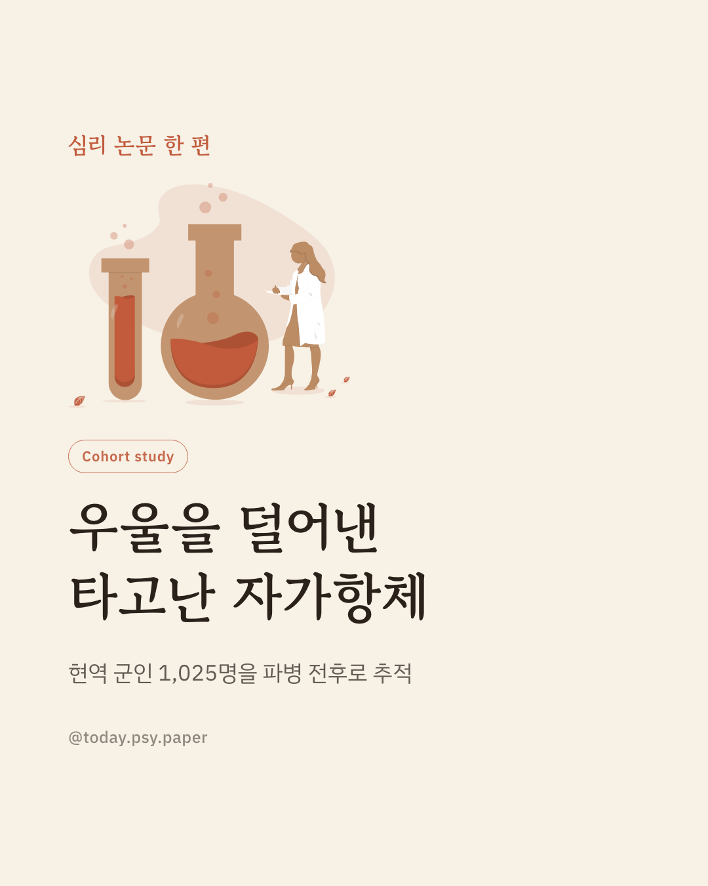
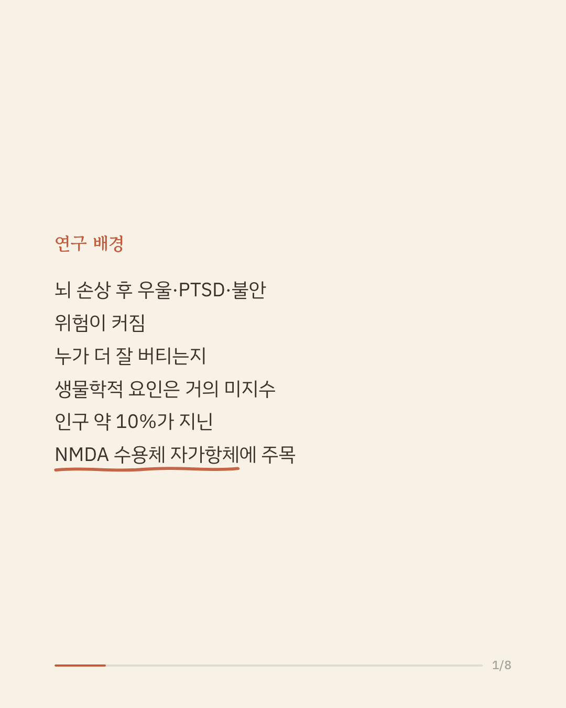
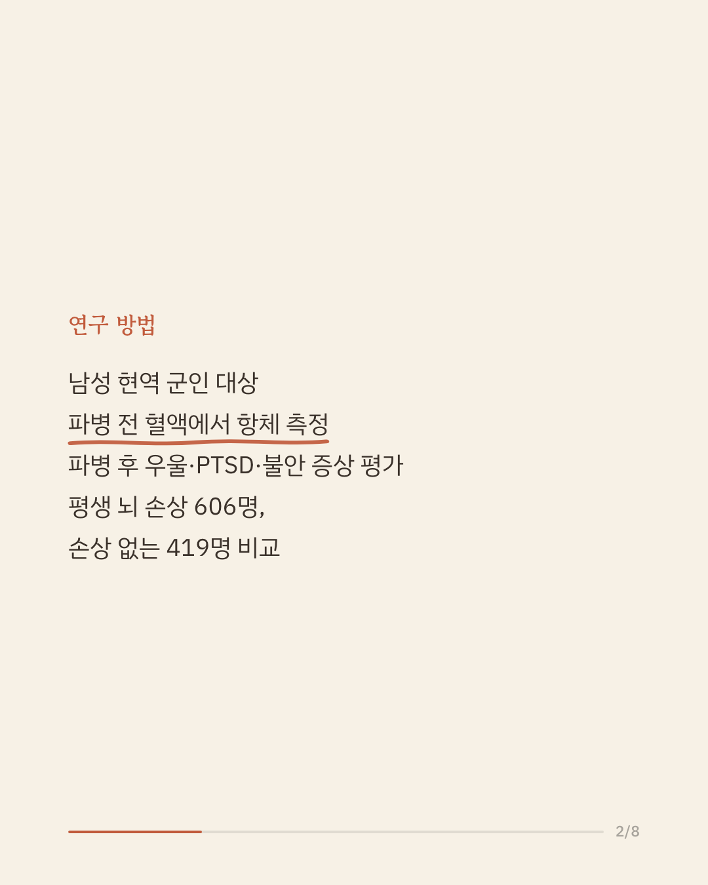
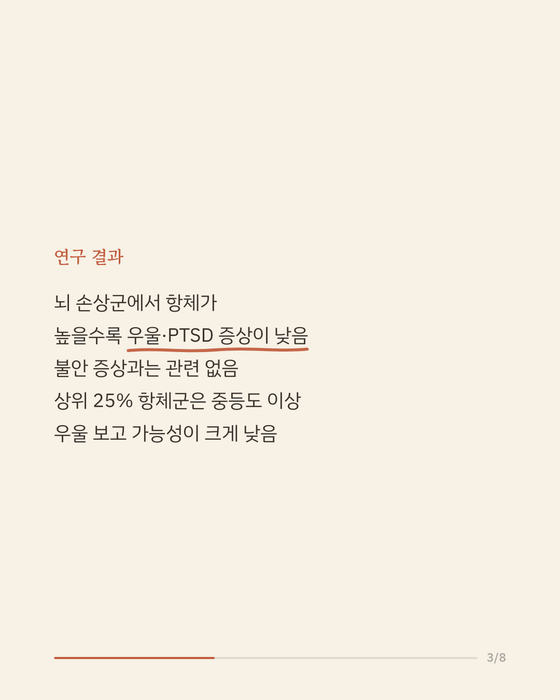
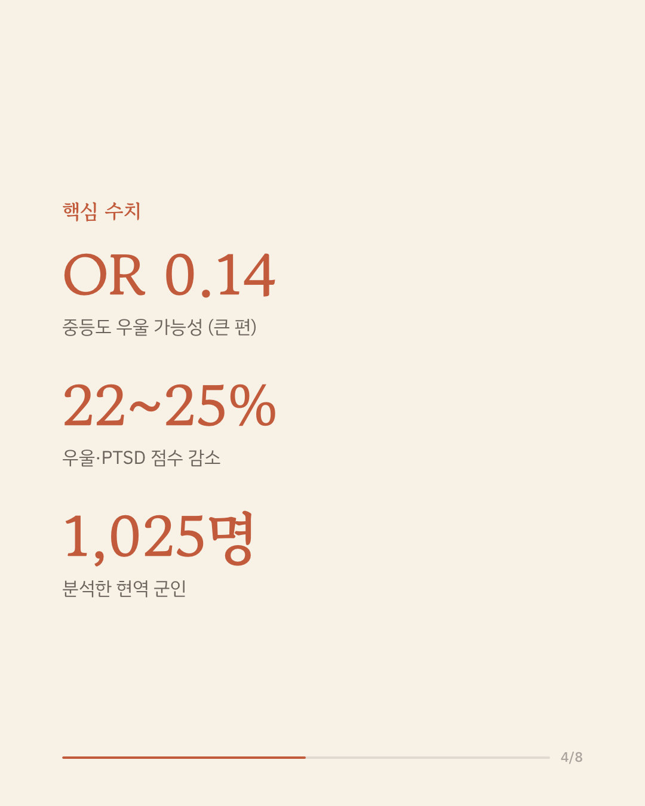
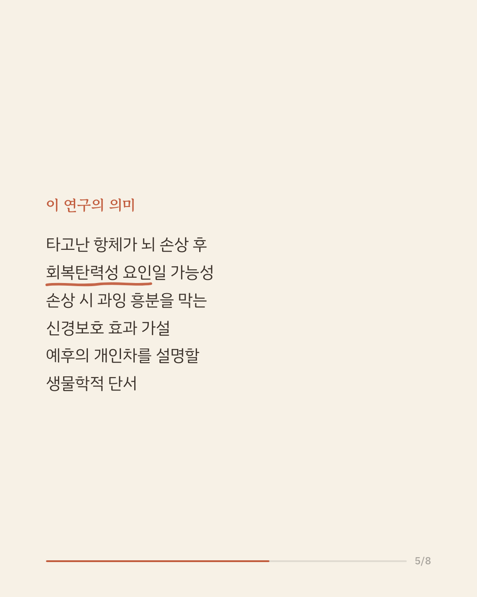
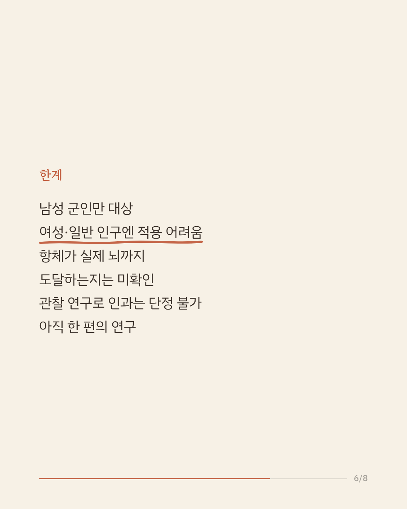
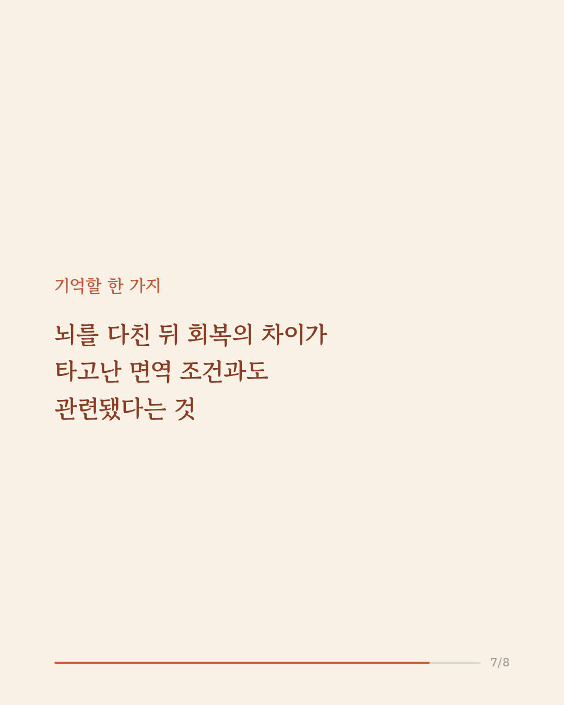
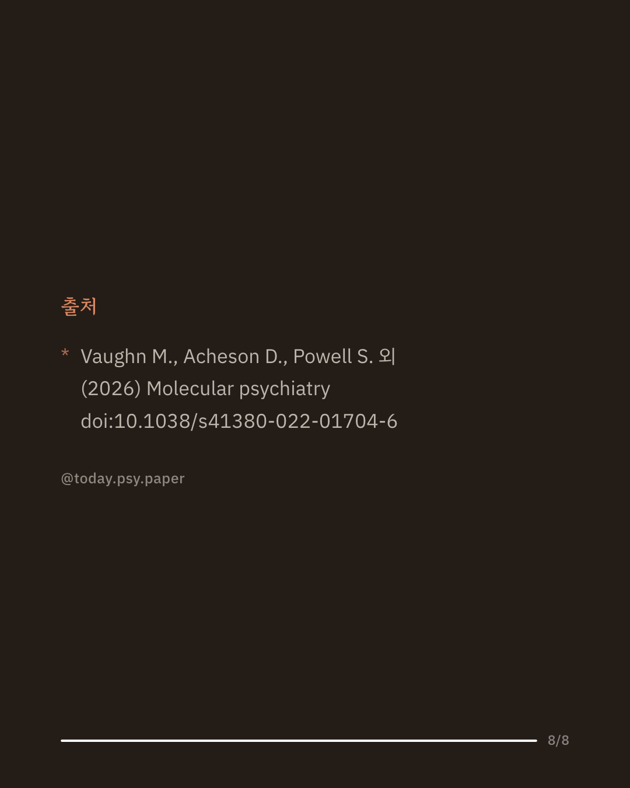

머리를 크게 다치는 외상성 뇌 손상 이후에는 우울증과 PTSD 위험이 높아지는 것으로 알려져 있습니다. 하지만 같은 손상을 겪어도 어떤 사람은 큰 어려움을 겪고 어떤 사람은 비교적 잘 지내는 이유, 특히 그 생물학적 배경은 잘 밝혀져 있지 않았습니다. 연구진은 인구의 약 10%가 지니고 있는 'NMDA 수용체 자가항체'가 뇌 손상 후 정신건강에 영향을 주는지 살펴봤습니다. 남성 현역 군인 1,025명의 파병 전 혈액을 분석한 결과, 뇌 손상 이력이 있는 사람 중 자가항체 수치가 높았던 사람은 파병 후 우울과 PTSD 증상이 다소 낮았습니다(불안은 차이가 없었습니다). 특히 자가항체가 상위 25%에 속한 군인은 중등도 이상의 우울 증상을 보고할 가능성이 뚜렷하게 낮았고, 향정신성 약물 사용 비율도 낮았습니다. 연구진은 이 항체가 뇌 손상으로 인한 우울·PTSD 위험을 완충하는 '회복탄력성' 요인일 수 있다고 봤습니다. 다만 대상이 남성 군인에 한정되고, 항체가 실제로 뇌까지 도달해 작용하는지는 확인되지 않았습니다. 단일 연구이므로 확대 해석은 조심해야 합니다. 출처: Molecular Psychiatry (2026), 'Natural anti-NMDAR1 autoantibodies are associated with lower risk for depression and PTSD symptoms after traumatic brain injury' #임상심리 #정신건강정보 #외상성뇌손상 #트라우마연구 #심리학논문
python3 publish.py 42711406